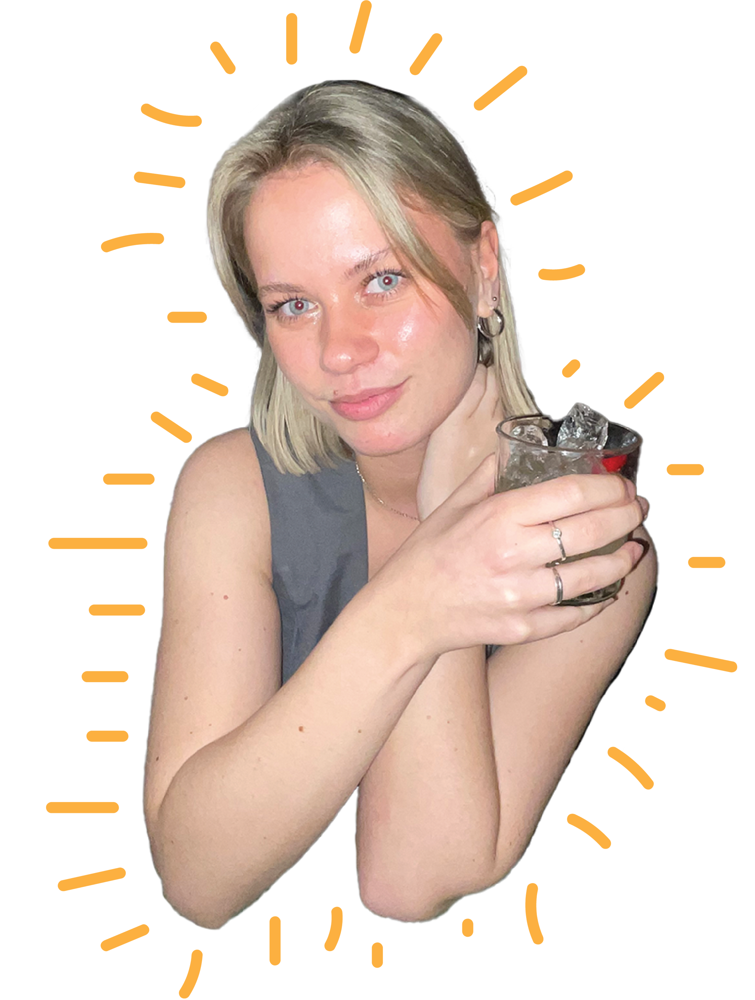
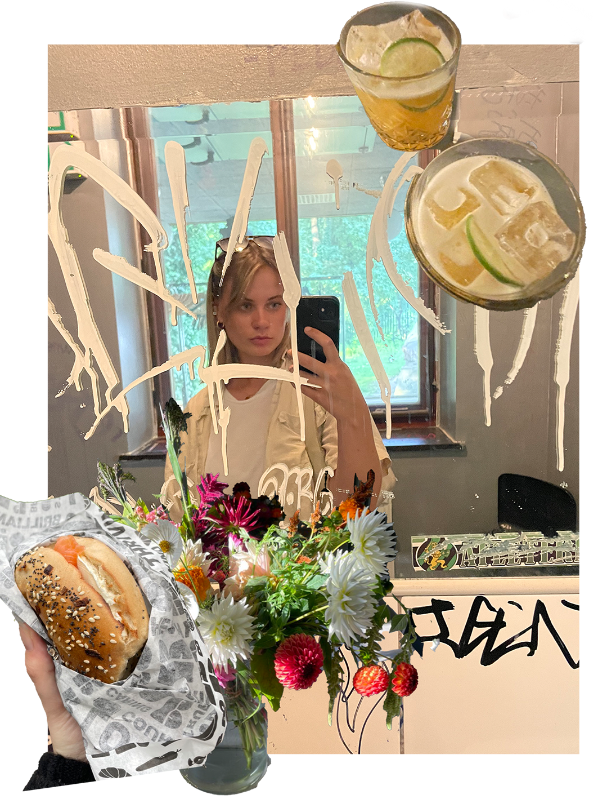

Portfolio
Digital designer med fokus på
Figma, HTML, CSS och grafisk design
KAJSA.


Min designprocess börjar alltid med att förstå kundens behov och vision. Jag tror på att samarbeta nära med mina kunder för att fånga deras idéer och förvandla dem till verklighet. Genom att använda Adobe Creative Suite, Figma, HTML och CSS och hålla mig uppdaterad med de senaste trenderna, kan jag leverera design som inte bara ser bra ut, utan också fungerar effektivt.
I min portfolio hittar du ett urval av mina projekt, där jag har haft möjlighet att arbeta med olika branscher och utmaningar. Varje projekt är en unik möjlighet att lära och växa, och jag ser fram emot att fortsätta utvecklas som designer.